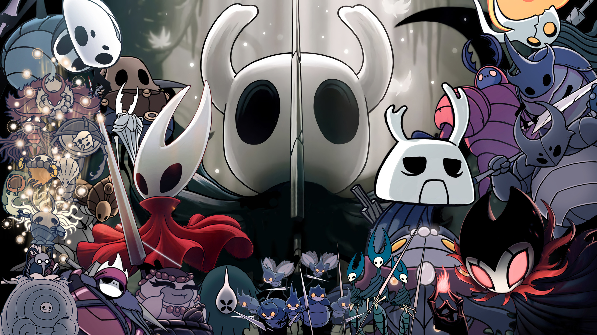

Gostou da curiosidade?
“Hollow Knight” é um jogo independente multiplataforma lançado em 2017 pela Team Cherry. Especificamente, é um jogo muito popular, conhecido como um jogo de tema “souls-like”. Esses são jogos difíceis que recebem esse apelido por causa dos jogos da saga “Souls”, como “Dark Souls”, “Elden Ring”, entre outros, devido ao seu nível elevado desde o primeiro jogo lançado. Como mencionei, por ser um jogo extremamente difícil, estarei dando algumas dicas e revelando alguns segredos. Clique em um dos links acima para mais informações.
Imagem do personagem principal do jogo
“Hallownest” é um reino de insetos esquecido há muito tempo. Era um reino outrora próspero, que tinha um rei reverenciado e uma rainha adorada. No entanto, como qualquer bom reino, havia problemas. O Rei, que residia em seu palácio conhecido como “Palácio Branco”, percebeu que havia uma revolta em seu amado reino. Algo estava errado. Algo estranho havia acontecido dentro de suas terras. Em seguida, o rei buscou descobrir o que havia acontecido. Havia outra força, tão poderosa quanto ele. Mas essa entidade, extremamente poderosa, atacava os sonhos dos seres. Foi então que o rei descobriu o mundo dos sonhos. E descobriu mais, descobriu que havia guerras dentro desse mundo, afinal, era lá que havia controle total dos seres vivos. Ele estava perdendo o controle para a grande entidade dos sonhos: A Radiancia. Esta, por sua vez, extremamente poderosa, sempre viveu e sempre viveria. O rei precisava fazer algo para proteger o seu reino, seu povo e seu poder enquanto ser supremo.
Foi então que o rei, possuído por forças de sua terra antiga, por ser o único dos Wyrms vivo, mas em forma de inseto, usou a temida força do Vazio. O Vazio era, de fato, muito poderoso. Ele tinha a capacidade de criar, dar poderes, controlar criaturas e ser conduzido ao poder supremo. Era tão escuro quanto uma noite sem luz. Assim, o rei criou cavaleiros. Inúmeros e incontáveis cavaleiros vazios, sem coração, sem sentimentos e com apenas uma missão: morrer em prol do rei, para que ele pudesse viver. Eles eram cegos pela sua missão. No entanto, infelizmente, nenhum era perfeito. Todos fracassavam. Todos eram fracos e infectados pela Radiance. Afinal, ela era luz e tentava dominar o mundo obscuro do rei.
O rei, envolto de sua sabedoria, conseguiu criar um cavaleiro diferente. O Hollow Knight perfeito. O rei com seus súditos fiéis em seu castelo o contemplaram e o conduziram para sua missão. Ele parecia perfeito para selar as formas infectantes e impuras da Radiance. O rei criou e usou os três chamados Sonhadores. Eles eram poderosos o suficiente pra selar todos sonhos e manter a paz em seu reino. Ou pelo menos deveriam.
O tão perfeito Cavaleiro Vazio tinha cumprido sua missão. Mas a Radiance não deixou de tentar e tentar. Até que o selo é corrompido e o rei, nos seus últimos dias, criou a sua última tentativa: você. Que será responsável por quebrar os selos, destruir o antigo Cavaleiro e colocar-se no seu devido lugar de controlador da praga. Mal sabia o rei que você era o soldado perfeito e conseguiria completar a missão. É aí então que, você despenca do abismo e cai em Dirtmouth, uma cidade desolada. E então, você tem sua missão e não descansará enquanto não a cumprir: selar os poderes de Radiance em uma luta que lhe custará a vida. Mas para um grande guerreiro, sem sentimentos e preenchido pelo vazio, não deve ser grandes coisas. Apenas um desfecho adequado à quem nasceu para isso. Basta seguir o protocolo, afinal e restaurar o que o rei construiu. É com a vida vazia de um cavaleiro com uma única missão que Hallownest irá regressar aos dias de paz.
Imagem de todos os personagens de Hollow Knight
Voc√™ sabia que o personagem principal de Hollow Knight foi retirado de um projeto anterior da Team Cherry chamado Hungry Knight, que foi realizado em menos de 48 horas em um encontro de desenvolvedores? Isso √© um exemplo interessante de como as ideias podem evoluir e se transformar ao longo do tempo! üòä
No desenvolvimento de Hollow Knight, as inspirações da Team Cherry foram jogos como zelda II,Super metroid e Castlevania: Aria of Sorrow, e você tambem sabia que O modelo de movimento em Hollow Knight veio das séries Mega Man e Mega Man X.
em primeiro 1°lugar skate king com 31m 24s de LRT(load removed time)
video no qual ele alcançou 1°lugar
Caso queira ver diretamente no Youtubeclique aqui
já em 2°lugar temos lep com 31m 39s de LRT
video no qual ele alcançou 2°lugar
e por ultimo mas não menos importante temos jackmanmarcus com 31m 46s de LRT
video no qual ele alcançou 3°lugar
Caso queira ver diretamente no Youtubeclique aqui